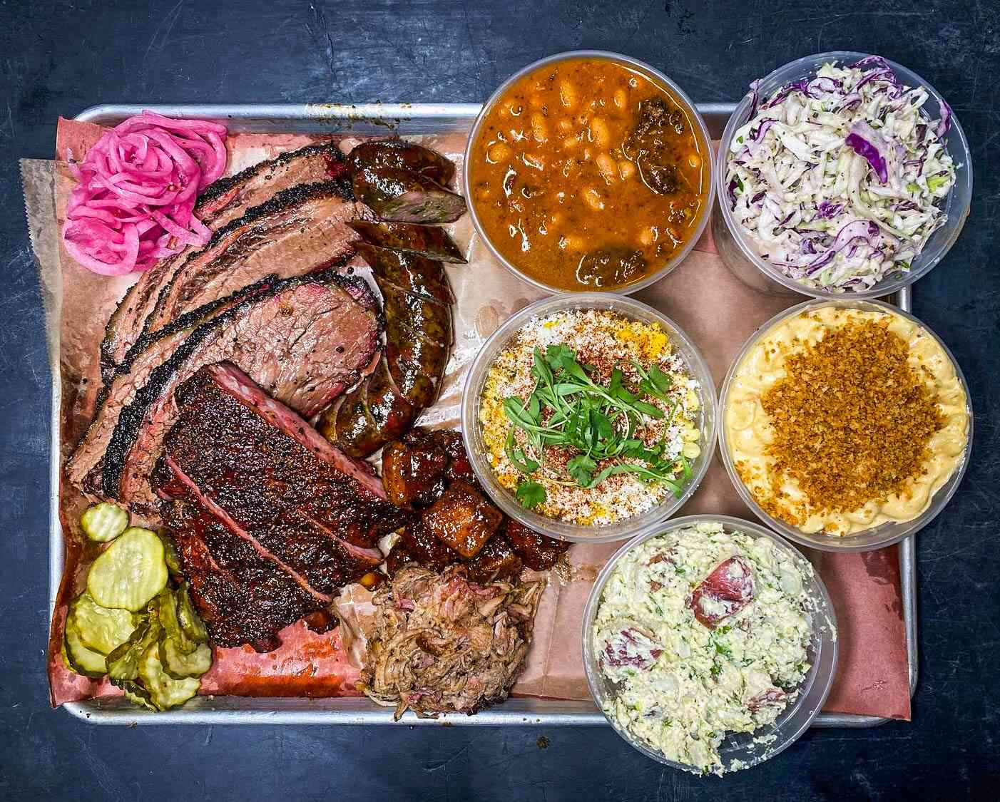
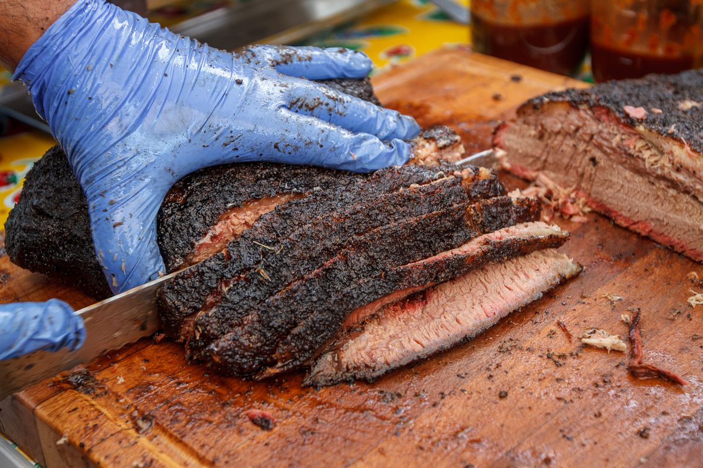
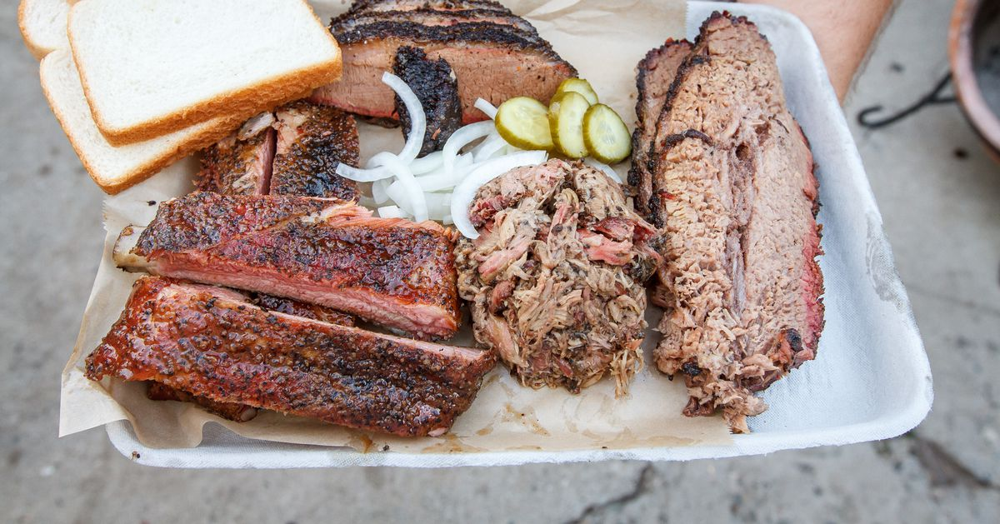
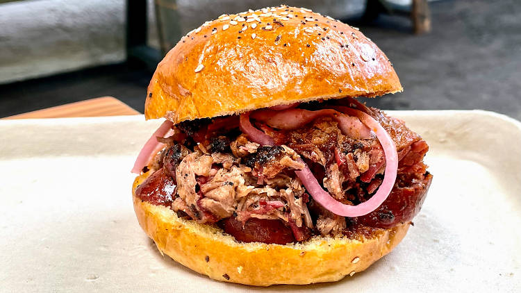

Located in east Los Angeles, Moo's Craft Barbeque offers a variety of high quality meat dishes.
Stop by for a savory meal!

Photo credits: Food & Wine
About the Business
Moo's Craft Barbecue is a small business in east LA, serving customers savory meats
and brewed drinks. The meat selection includes brisket, pork ribs, and sausages (to name a few!),
alongside an assortment of side dishes and burgers. Established in 2017, the restaurant is currently
located at 2118 N Broadway, and aims to expand and offer more options to the larger LA community.
Photo credits: Food & Wine
Featured Dishes

Brisket
Briskets can be ordered in various weights in either lean or moist forms, and included with a side of condiments such as BBQ sauce and pickles.
Photo credits: Eater LA

Pork Ribs
Pork ribs come by the pound and half-pound. With a selection of condiments, you can't go wrong with this ~$30 meal.
Photo credits: Eater LA

Chopped Brisket Sandwich
Served with onions, pickles, and the restaurant's signature brisket, this loaded sandwich is a meat lover's dream.
Photo credits: Time Out
See what others are saying about Moo's Craft Barbecue!